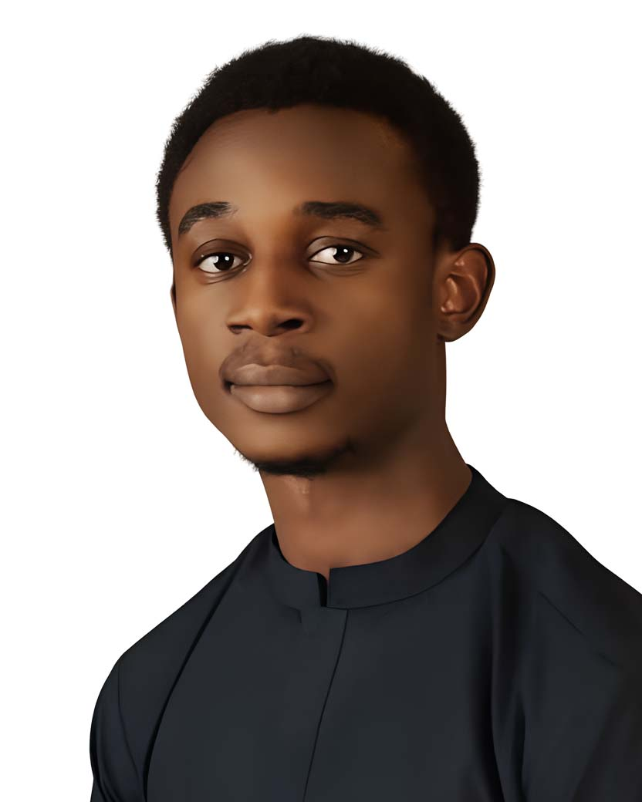
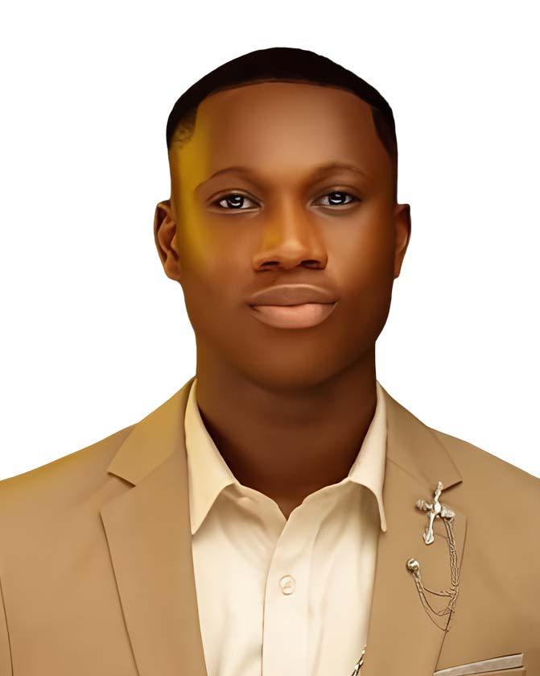

Worship
Not performance, but a people turning their whole attention toward God.


Until we gather
More thana gathering.An encounter.
Wind of the Spirit is our annual Holy Ghost meeting at Supernatural Life Church.
Every year, we gather with one desire: to meet with God.
We come to worship. We come to pray. We sit under the Word. We make room for the Holy Spirit to move, speak, heal, restore and change lives.
And this year, we are coming again.
Nothing is too hard for Him. Nothing is beyond His reach. We are gathering to encounter the God who makes all things possible.
Not performance, but a people turning their whole attention toward God.
Fervent, united and expectant—making room for heaven to move.
Truth proclaimed with clarity, power and the capacity to transform.
A moment of equipping, awakening and fresh spiritual strength.
Leaving restored, realigned and ready for what God makes possible.
Starting November 1
Join us for 40 days of prayer and fasting. Choose the WhatsApp prayer room for your day below.
Join Pastor Philip Olubakin and the SLC Prayer Chain every day for prophetic prayers.
Moments of worship, prayer, the Word and spiritual impartation from previous Wind of the Spirit gatherings.


Has God healed, restored or transformed your life? Share what He has done and let your story point someone else to possibility.
Share Your Testimony



Two simple ways to prepare for Wind of the Spirit 2026. The external forms will open here as soon as their links are ready.
Everyone planning to attend Wind of the Spirit 2026 can register through the official external form.
Register for WOTSShare the testimony, expectation or point of praise you are bringing into the gathering.
Add a Praise PointPartner with Wind of the Spirit and help create room for lives to be reached, restored and transformed.
Your partnership supports the gathering and helps extend its impact beyond one night.
Become a PartnerABUJA NIGERIA
Wind of the Spirit is Supernatural Life Church's annual Holy Ghost gathering, centred on worship, prayer, the Word, impartation and spiritual renewal.
Friday, December 11, 2026, starting at 5:00 PM.
At the National Stadium in Abuja, Nigeria.
Registration is open to everyone planning to attend. Complete the official registration form.
Yes. The gathering will be livestreamed on the official Supernatural Life Church YouTube channel. The direct viewing link will be shared when it is ready.
Free buses are planned. The number of buses, routes and pickup points are still being confirmed and will be published once approved.
Watch centres are planned for those unable to attend in Abuja. Locations and participation details will be announced in due time.
Yes. Open the official partnership form to support the gathering.
Follow Wind of the Spirit and Supernatural Life Church on Instagram, or visit slchurchng.org.